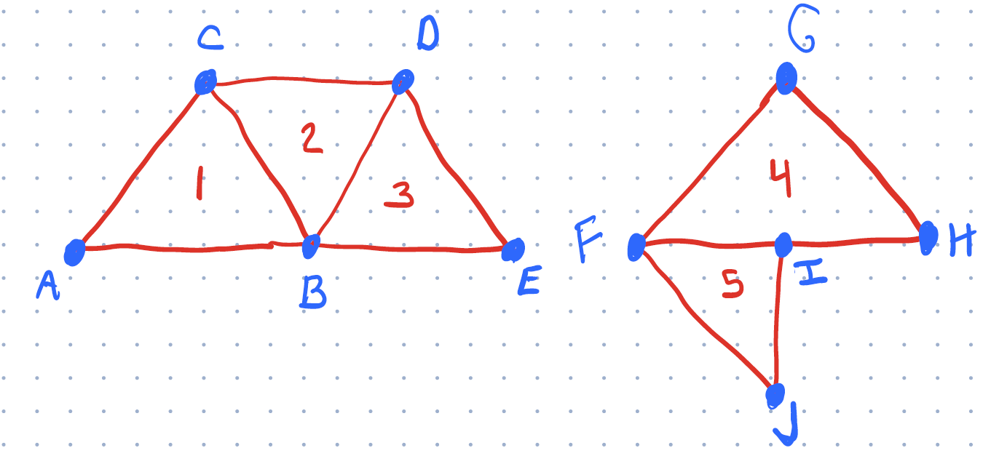

Page 1: Meshes: What you need to know
We discussed meshes in class. Here are the things you need to know.
Mesh Concepts
The main concepts you need to know (some of these are discussed on this page, but many of them will come from lectures and the readings):
- What is a mesh (as a collection of triangles)
- Why we avoid “Triangle Soup”
- What is a good mesh
- avoiding T-Junctions
- good triangles
- consistent orientations
- Indexing vertices for efficiency
- Vertex and Face Properties
- The need for Vertex Sharing
- The need for fancy representations
- You don’t need to know a fancy representation (like Winged-Edge) but you should have a sense why they are important.
- Efficiency tricks (strips and fans)
- We’ll only touch on these briefly
Meshes and Geometry and BufferGeometry in THREE.js
Confusingly, THREE.js uses the term Geometry to mean a collection of triangles, and uses the term Mesh to mean a Geometry (collection of triangles) that has a material associated with it, and all of the other stuff that a “Graphics Object” has (e.g., transformations and hierarchy). A THREE Mesh “has-a” Geometry, but a Geometry is the collection of triangles that is more like the common graphics usage of “mesh”.
THREE’s terminology gets more confusing… In the old days, THREE had a Geometry class. This was a very flexible way to represent a set of triangles. It had an API that would allow a programmer to specify collections of triangles in many different ways. But, it was inefficient, so it introduced a much more efficient BufferGeometry class that organized triangle data using data structures that are inflexible, but efficient to send to graphics hardware. Almost everything in THREE (outside of graphics classes) uses BufferGeometry. So, when talking about “Geometry” (a collection of triangles), we’re probably talking about BufferGeometry.
The original Geometry was deprecated - so it doesn’t actually exist inside the library (see this for details). We can still use it, because it is available as an “add-on” option (add-ins go into the “examples” directory, which is another THREE thing to get used to). If you want to read about Geometry you need to look at the old version of the documentation: the link (documentation) is to the 2021 version of this class. If you make a Geometry you can convert it to a BufferGeometry (it has a toBufferGeometry method, which isn’t described in the documentation).
In the old versions of CS559, we used the Geometry class. It was efficient enough, and it was easier to use, and it was more flexible. Basically, to understand BufferGeometry you need to understand the concept of a buffer, which doesn’t come up in class until we discuss graphics hardware. The point of BufferGeometry is that it works the way the hardware does.
In this workbook, we will discuss both Geometry and BufferGeometry. You can use either (remember to import the deprecated class and to convert the objects), however, we encourage you to use BufferGeometry. Some of our old code still uses Geometry, and it is useful for pedagogical purposes. It is a learning goal for you to understand the differences in the representations.
Before we can understand these two, we need to talk about the basics of meshes.
Triangles and Meshes
Let’s consider a connected collection of triangles. This is a “mesh” in the Computer Graphics sense, (but not a Mesh in terms of THREE). There are three types of “objects” that we encounter: the triangles themselves, the vertices (the corners of the triangles), and the edges (the connect pairs of vertices, and pairs of triangles). If the triangles connect, they will share vertices and edges. Any edge is part of 1 or 2 triangles, a vertex might be part of any number of triangles.
Here is a diagram to help with the explanations:

The first mesh has 3 triangles (1,2,3), made from 5 vertices (A,B,C,D,E). The second mesh is two trangles (4,5), make from 5 vertices (F,G,H,I,J). We will use these to discuss some important properties of meshes.
Generally, our meshes to have some properties that make them “well-formed”:
-
No T-Junctions - triangles either share an edge (2 vertices) or not. Having a vertex that is “on another triangle’s edge” is a bad idea. You can see this in the second picture. Vertex I is a T-junction: the point I is on the edge FH. For these triangles to “touch” point I must be in exactly the right place - otherwise there will be a “crack” (yes, that’s a technical term). If it’s off by a little bit (for example, because of rounding error or because we edit triangle 4), we get a crack. Therefore, if we want triangles to connect, they must share an entire edge - it’s the only way to prevent cracks (we can’t rely on perfect arithmetic).
-
Consistent Orientations - In 2D, all triangles should be either clockwise or counter clockwise. In Picture 1, our triangles are ABC, BDC, and BED (counter-clockwise) or ACB, CDB, DEB (clockwise). If we had ABC, BCD, BDE, they would be inconsistent. When the triangles are consistent, each edge has (at most) one triangle in each direction: note that the edge BC is BC in ABC but CB in DBC. In 3D, having consistent orientation is important because it means the cross products (normal vectors to the triangles) point in the same direction. Usually, we like to have them point outwards.
-
Vertex Sharing - If triangles share a vertex, we prefer to store this as a single vertex (that multiple triangles refer to), rather than as a bunch of different vertices. In the old days, this was an important performance consideration, because each vertex must be transformed, and the transformations were expensive. Now, sharing is important for other reasons. For example, it makes it easier to keep vertices consistent. In the example, note how vertex B is part of 3 triangles. If you move vertex B, the triangles stay connected.
-
Good Triangles - There are a bunch of other criteria that are less important now. But basically, we don’t like our triangles to be too small, or have edges that are too short, and we don’t like edges that are too close to each others. We’ll come back to these properties later in the class.
Edges are useful data structures because they help relate triangles and enforce consistency. They are useful in building tools to edit meshes. But we generally don’t use them much in computer graphics. The data structures that explicitly represent edges are cool and useful if you are changing meshes, but we won’t learn about them in class - we’ll make our meshes and not change their connectivity. These fancy data structures are discussed in the optional readings.
For graphics, the main things with meshes are the vertices and the triangles. The data structures need to represent these two things.
Because of vertex sharing, we often prefer to use an indexed representation. With an indexed representation, we keep an array of vertices (each with associated information). Each triangle just needs to have a list of the indices into the array of vertices. So, for the left figure, our “vertex list” would be [A,B,C,D,E], and our triangle list would be [0,1,2, 2,4,3, 2,5,4] (ABC, BDC, and BED).
The alternative to well-formed meshes is an unorganized collection of triangles. This is sometimes referred to as triangle soup. Having structured meshes (vertex sharing, etc.) is useful because it makes it easier to maintain the collection (e.g., avoid cracking, having consistent normals, …). The efficiency gains of structured representations may be lost because we end up splitting vertices.
Where does information live on Meshes?
Consider specifying colors for the mesh. We might want to have the entire mesh be one color. We might want to put a color on a triangle (if we want to have each triangle be a solid color). We might want to allow each vertex to have a separate color (so the triangle has three colors, and interpolates between them in between). Here’s an example of each one:
The left one has a single color for the entire mesh (yellow). The middle one has a color for each triangle (yellow and orange). The right one has vertex colors (see how the colors interpolate over the triangles).
Of course, we would like to have the flexibility to specify the information (color) anywhere we might like. This is where THREE’s old Geometry class comes in handy: it stores an index representation of a collection of triangles. Geometry stores a Mesh as a vertex-indexed set of faces (where the faces are triangles). The Geometry class (documentation) stores a list of vertices (as Vector3 positions). It also stores a list of Faces. Each face, refers to 3 vertices (by their index in the vertex array). Faces and vertices can both have properties (like color) attached to them.
Attributes and Buffers
For reasons relating to how the graphics hardware works, programs prefer to keep as information associated with the vertices (rather than the triangles). The attributes (like position and color) belong to the vertices. The triangles are created as sets of three vertices. They don’t store any information other than the indices of the vertices (in fact, sometimes they don’t even store that… but more on that in a moment).
Now, you are hopefully wondering… how do we deal with the case where one vertex needs to have more than one color? For example, those points in the middle where the orange and yellow triangles connext - those vertices are both yellow and orange (depending on which triangle is using it). How can we have different attributes on shared vertices?
The short answer is: we cannot. If all information lives on the vertices, we can only share vertices that have all their attributes in common. So, in this example, we cannot have a vertex that is both orange for one triangle and yellow for the other: we need to split the vertex into two different vertices. This goes against our goal of sharing (above).
This “all information on the vertices” is inconvenient: for the middle pair of triangles, we can’t simply make 4 vertices, and specify the colors of each triangle. We need to make 6 vertices, and set the color correctly for each one. This might seem wasteful, and it is a bit of a hassle, but the simplicity of having only one place for “all” information (all attributes are on vertices) makes many things simpler. It’s how the graphics hardware works (we’ll learn more later in the class). So it is actually way more efficient.
Because all vertices are the same, we can make simple blocks of memory that store the values for all the vertices as one dimensional arrays. For example, the positions of vertices is just a long list of numbers (3 per vertex). We call blocks of memory “buffers”. We call a block of memory that is meant to store a list of attributes (per vertex) an AttributeBuffer. THREE calls them BufferAttributes. But they are just simple arrays of values - stored in a slightly special way to allow them to be transfered efficiently to the graphics hardware. This has to do with some technical details on how JavaScript handles types.
THREE’s BufferGeometry class stores a collection of triangles. It can have a number of BufferAttributes for the different attributes that you want associated with the vertices. It can handle the triangle indices in two ways: either it will assume that your vertices are in order (basically, your triangles are (0,1,2), (3,4,5), etc.), or you can give it a list of 3n (n=number of triangles) integers which are the indices of the vertices (3 per triangle).
So, Geometry is convenient since it allowed us to put information on faces or vertices. BufferGeometry is fast because it can transfer the arrays directly to the graphics hardware. Speed won over convenience.
For CS559, you can use either. If you want to use the old Geometry, you need to import the deprecated/Geometry.js file, and use the classes from there.
A First Example
The example (08-01-01.html 08-01-01.js) shown above illustrates a simple case of making meshes using both Geometry and BufferGeometry. Here it is again:
Read the code. You will see that I make objects (using the class framework) for “TwoTriangles” - and it is written six ways (mesh color, face color, vertex color - each written with Geometry and BufferGeometry).
Here’s the code for the two colored triangles using Geometry. You can see that I make an array of vertices (only 4, since I can share - lines 114-117), and that I can set the colors on the faces (lines 120 and 123).
|
|
In contrast, here is the version of the code using BufferGeometry.
|
|
Notice that we had to split the vertices (so we have 6 of them) - for example (0,0,0) is repeated, once for each triangle. And note that we need to specify the colors for each of the 6 vertices.
THREE has materials specifically designed to work with meshes. If you want materials such as MeshStandardMaterial to use vertex colors, you need to tell it to do so. As far as I can tell, if you tell MeshStandardMaterial that you want to use vertex colors, but you provide face colors instead, that’s OK. Vertex colors override face colors (if you are in vertex color mode). The default ignores colors on the geometry.
For normals, you can provide a normal for either the face or for each vertex on the face. THREE has a way to automatically compute the normals (so they are normal to the triangle). Notice that in both examples, we compute have THREE compute the normals for us. It will automatically create an attribute buffer to store them.
Example: Mesh Normals
This example uses the same two triangles. Except that this time, the normals are done differently for each of the 3 versions. On the left, THREE computes the normals for us (see the line geometry.computeFaceNormals();). In the middle one, we assign each vertex on each face a normal value. This is the same normal that would have been computed for each triangle. The triangle on the right has the vertices in the middle (along the edge between the two triangles) pointing forward - to give the same normals as if it were a smooth, curved piece (rather than two triangles with a crease). Because the lights are on the sides, the middle of this object is dark. But, as you move it, notice the lighting behaves as if this were a curved object.
Be sure to read the code in 08-01-02.js and understand how the meshes are put together.
A Note on BufferGeometry
While BufferGeometry is the preferred way to do things in THREE, it can be less convenient if we want to see our triangles (use their “real” normals and/or have triangle colors). In practice, we don’t usually want to see individual triangles, so this isn’t a big problem.
One trick: the documentation doesn’t have a good list of what attributes we can make. If you noticed, so far we’ve made buffers for position, normal, and color. The are other choices (we’ll see “uv” later in this workbook). The answers to this get a little tricky, and depend on how the graphics hardware works. Basically, the names of the buffers are variables that get used in the programs that run on the graphics hardware to transform vertices and color pixels.
Summary: Meshes
This is a reminder of what we learned about Meshes, and an example of how to make a very simple one (with two triangles). On Page 2 (Mesh Exercise), you’ll get to try to make a more interesting mesh.